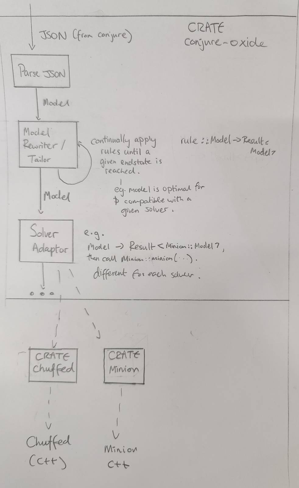

2023‐11: High Level Plan
This page is a summary of discussions about the architecture of the project circa November 2023.
In brief:
Conjure Oxide
Model Rewriting Engine
The purpose of the model rewriting engine is to turn a high level constraints model into one that can be run by various solvers. It incrementally rewrites a given model by applying a series of rules.
Rules have the type:
rule :: fn(Expr) -> Result<Expr,Error>
The use of Result here allows for the type checking of the Model at each stage (amongst other things).
A sketch of a rewriting algorithm is below. As we are using a Result type, backtracks occur when an Err is returned.
fn apply(rules,x) {
new_rules = getApplicable(rules)
if shouldStop(x) {
return Ok(x)
}
// Recursive case - multiple rules
while len(rules') > 0 {
rule = select(new_rules)
new_rules.remove(rule)
res = apply(rules,rule(x))
if res is Ok, return Ok
}
// No rules - base case
if (compatibleWithSolver(x)) {
return Ok(x)
}
return Err()
}
This is, in effect, a recursive tree search algorithm. The behaviour of the search can be changed by changing the following functions:
- getApplicable:
fn(Vec<Rule>) -> Vec<Rule> - select:
fn(Vec<Rule>) -> Vec<Rule> - shouldStop:
fn(x) -> bool
The following functions are also important to implement the rewriting engine:
domainOf:: Expr -> Domain
typeOf:: Expr -> Type
typeOfDomain:: Domain -> Type
categoryOf:: Expr -> Category
data Category = Decision | Unknown | Quantified
Solver Adaptors
Once we have a Model object that only uses constraints supported by a particular solver, we are able to translate it to a form the solver understands.
The solver adaptor layer translates a Model into solver specific data-structures, and then runs the solvers.
If the given Model isn't compatible with the solver, the use of a Result type here could allow a type error to be thrown.
Other crates inside this repository
This repository contains the code for Conjure Oxide as well as the code for some of its dependencies and related works.
Currently, these are just Rust crates that provide low level bindings to various solvers.
There should be a strict separation of concerns between each crate and Conjure Oxide. In particular, each crate in this project should be considered a separate piece of work that could be independently published and used. Therefore:
- The crate should have its own complete documentation and examples.
- The public API should be safe and make sense outside the context of Conjure Oxide.
Solver Crates
Each solver crate should have a API that matches the data structures used by the solver itself.
Eventually, there will be a way to generically call solvers using common functions and data structures. However, this is to be defined entirely in Conjure Oxide and should not affect how the solver crates are written. See Solver Adaptors.
This section had been taken from the '2023‐11: High Level Plan' page of the conjure-oxide wiki